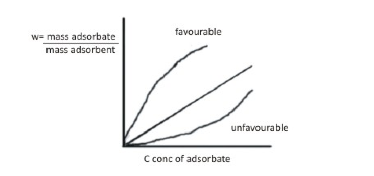
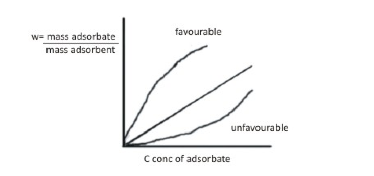

Theory:
Adsorption is the adhesion of atoms, ions, or molecules from a gas, liquid, or dissolved solid to a
surface. This process creates a film of the adsorbate on the surface of the adsorbent. This process
differs from absorption, in which a fluid (the absorbate) is dissolved by or permeates a liquid or solid
(the absorbent), respectively. Adsorption is a surface-based process while absorption involves the whole
volume of the material. Adsorption is a surface phenomenon. The term sorption encompasses both
processes, while desorption is the reverse of it.
A relation between the amount of adsorbate adsorbed on a given surface at constant temperature and the
equilibrium concentration of the substrate in contact with the adsorbent is known as Adsorption
Isotherm.
Some of the standard applications of adsorption are:
- Heterogeneous Catalysis- This is probably the most important application relevant to
chemical
engineering. The reaction mechanism of how a reactant reacts on a catalyst surface revolves around
adsorption. Therefore designing catalyst, reactors and studying them requires knowledge of
adsorption
- Separation- Adsorption is used as a separation process in many chemical as well as bio
chemical
industries to separate gaseous or liquid mixtures. Designing adsorption equipment like fixed bed
adsorbers, gas drying, pressure swing adsorption etc. , chromatography requires knowledge of
adsorption.
Many experiments in the lab use adsorption as a process to calculate various parameters like surface
concentration, porosity, change in surface energies, pore surface area etc.
Adsorption occurs due to the imbalance of forces at the surface of a material. This lead to formation
of
bonds (Covalent, ionic, Van der Waals, Hydrogen bonds etc.) between the surface molecules (adsorbents)
and the molecules in the fluid phase (adsorbate).
Adsorption is usually described through adsorption isotherms that is the amount of adsorbate on the
adsorbent as a function of its pressure (if gas) or concentration (if liquid) at constant temperature.
The adsorption isotherm is the equilibrium relationship between the concentration in the fluid phase and
the concentration in the adsorbent particles at a given temperature. The quantity adsorbed is nearly
always normalized by the mass of the adsorbent to allow comparison of different materials.
Some typical adsorptions are:

Freundlich Adsorption Isotherm
It is an empirical relation between the amount of an adsorbate adsorbed per unit weight (x/m, mg/g) of
adsorbent and the adsorbate equilibrium concentration (Ce, moles/L) in the fluid. The relation is given
below
x/m=K[(Ce)^n]
where, K and n are Freundlich coefficients. Here,
x = weight of adsorbate adsorbed on m unit weight of adsorbent and
Ce= equilibrium concentration of adsorbate.
Taking logarithm on both sides of equation 1 gives,
log(x/m)=log(K)+nlog(Ce )
Hence a graph of log(x/m) vs log(Ce ) gives a straight line with K as y-intercept and n as slope.
Theory:
Adsorption is the adhesion of atoms, ions, or molecules from a gas, liquid, or dissolved solid to a
surface. This process creates a film of the adsorbate on the surface of the adsorbent. This process
differs from absorption, in which a fluid (the absorbate) is dissolved by or permeates a liquid or solid
(the absorbent), respectively. Adsorption is a surface-based process while absorption involves the whole
volume of the material. Adsorption is a surface phenomenon. The term sorption encompasses both
processes, while desorption is the reverse of it.
A relation between the amount of adsorbate adsorbed on a given surface at constant temperature and the
equilibrium concentration of the substrate in contact with the adsorbent is known as Adsorption
Isotherm.
Some of the standard applications of adsorption are:
- Heterogeneous Catalysis- This is probably the most important application relevant to chemical engineering. The reaction mechanism of how a reactant reacts on a catalyst surface revolves around adsorption. Therefore designing catalyst, reactors and studying them requires knowledge of adsorption
- Separation- Adsorption is used as a separation process in many chemical as well as bio chemical industries to separate gaseous or liquid mixtures. Designing adsorption equipment like fixed bed adsorbers, gas drying, pressure swing adsorption etc. , chromatography requires knowledge of adsorption. Many experiments in the lab use adsorption as a process to calculate various parameters like surface concentration, porosity, change in surface energies, pore surface area etc.
Adsorption occurs due to the imbalance of forces at the surface of a material. This lead to formation of bonds (Covalent, ionic, Van der Waals, Hydrogen bonds etc.) between the surface molecules (adsorbents) and the molecules in the fluid phase (adsorbate).
Adsorption is usually described through adsorption isotherms that is the amount of adsorbate on the adsorbent as a function of its pressure (if gas) or concentration (if liquid) at constant temperature. The adsorption isotherm is the equilibrium relationship between the concentration in the fluid phase and the concentration in the adsorbent particles at a given temperature. The quantity adsorbed is nearly always normalized by the mass of the adsorbent to allow comparison of different materials.
Some typical adsorptions are:

Freundlich Adsorption Isotherm
It is an empirical relation between the amount of an adsorbate adsorbed per unit weight (x/m, mg/g) of adsorbent and the adsorbate equilibrium concentration (Ce, moles/L) in the fluid. The relation is given below x/m=K[(Ce)^n]
where, K and n are Freundlich coefficients. Here,
x = weight of adsorbate adsorbed on m unit weight of adsorbent and
Ce= equilibrium concentration of adsorbate.
Taking logarithm on both sides of equation 1 gives,
log(x/m)=log(K)+nlog(Ce )
Hence a graph of log(x/m) vs log(Ce ) gives a straight line with K as y-intercept and n as slope.